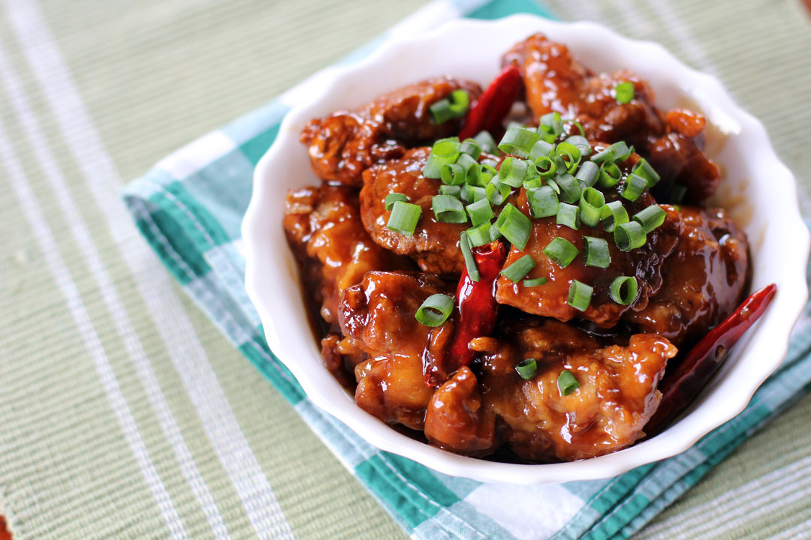

Home
General Tso's Chicken Recipe

Photo by Ang Sarap is licensed under a Creative Commons Attribution-NonCommercial-NoDerivs 3.0 Unported License.
Description
General Tso's Chicken, sometimes known as General Tao's chicken, is a sweet and spicy dish named after Zuo Zongtang (Tso Tsung-t'ang).
It consists of breaded chicken complete with a hot-sweet and sticky sauce. This dish goes well with sides such as broccoli, drief whole chili peppers, and a healthy serving of garlic.
Ingredients
Chicken:
- 4 large cups vegetable oil for frying
- 1 large egg
- 1 1/2 lbs skinless,boneless chicken
thighs, cut into 1 1/2 inch pieces.
- 1 tsp. salt
- 1 tsp. white sugar
- 1 pinch white pepper
- 1 cup cornstarch
Sauce:
- 2 tbsp. vegetable oil
- 3 tbsp. chopped green onion
- 1 clove garlic, minced
- 6 dried whole red chilies
- 1 strip orange zest
- 1/2 cup white sugar
- 1/4 cup soy sauce
- 3 tbsp. chicken broth
- 2 tbsp. peanut oil
- 1 tbsp. rice vinegar
- 2 tsp. sesame oil
- 1/4 tsp. ground ginger
- 2 tsp. cornstarch
- 1/4 cup water
Steps
- Heat veg. oil in a deep fryer or large saucepan
to 375 degrees F
- Whisk egg in large mixing bowl. Add chicken, salt,
sugar, and pepper; mix well. Mix in cornstarch, a little
at a time until chicken is well coated.
- Working in batches, carefully drop one piece of
chicken at a time into the hot oil. Fry until chicken
turns golden brown and begins to float, about 3
minutes. Remove chicken to a plate and allow to
cool as you fry the next batch.
- Once all of the chicken has been fried, refry the
chicken, starting with the batch that was cooked
first. Fry each batch until chicken turns deep golden
brown, about 2 minutes more. Drain on a paper towel-lined plate.
- To make the sauce: Heat vegetable oil in a wok or
large skillet over high heat. Stir in green onion,
garlic, whole chilies, and orange zest. Cook and stir
until garlic turns golden and childes brighten, 1 to 2
minutes.
- Add sugar, soy sauce, chicken broth, peanut oil, rice
vinegar, sesame oil, and ginger; bring to a boil and,
cook for 3 minutes. Whisk 2 teaspoons of cornstarch
in water until dissolved. Stir into the boiling sauce. Return to a boil and cook until the sauce thickens and is no longer cloudy from the cornstarch, about 1 minute.
- Stir chicken into the boiling sauce. Reduce heat to low and cook until chicken is heated through and has absorbed some of the sauce, about 3 minutes.